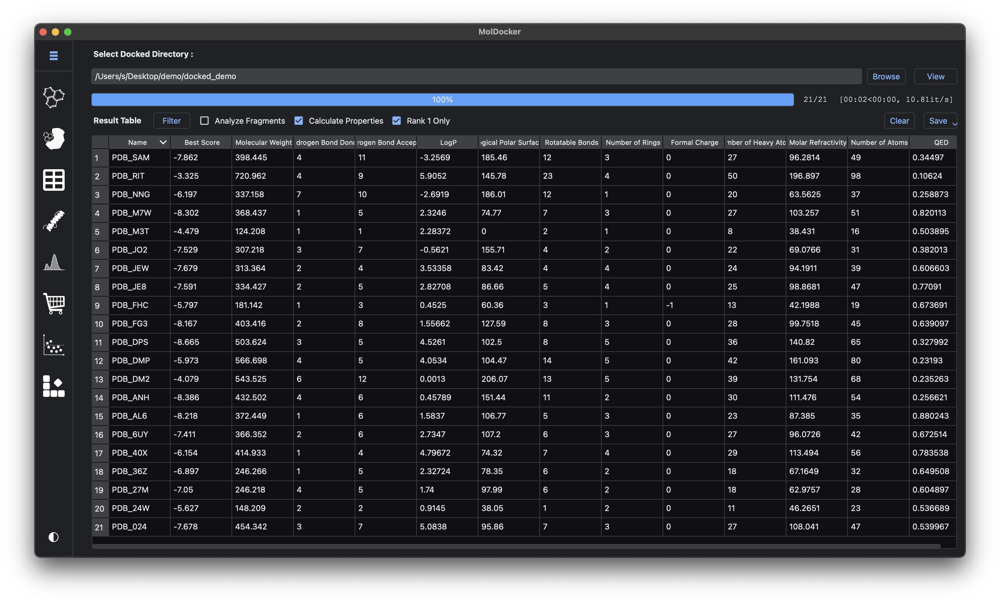
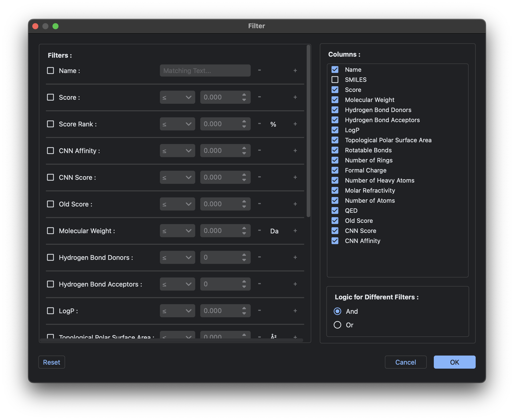
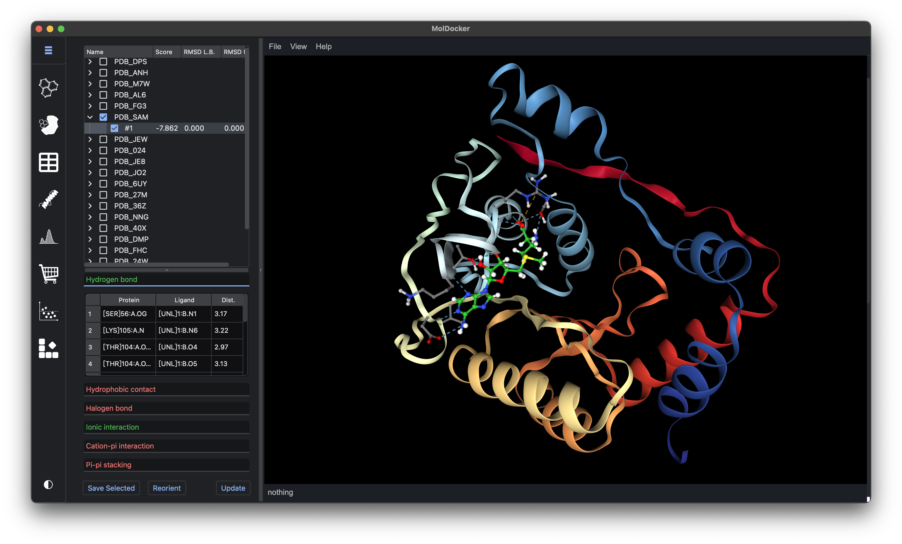
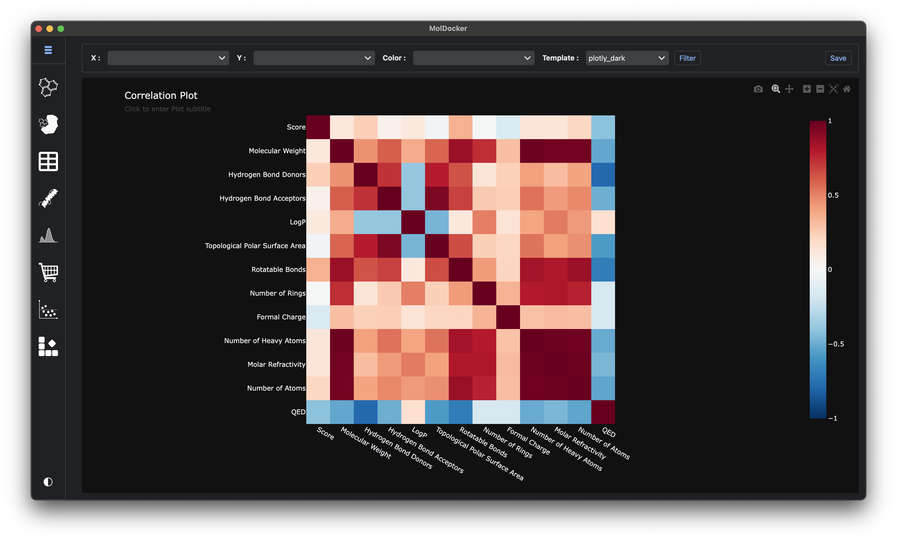
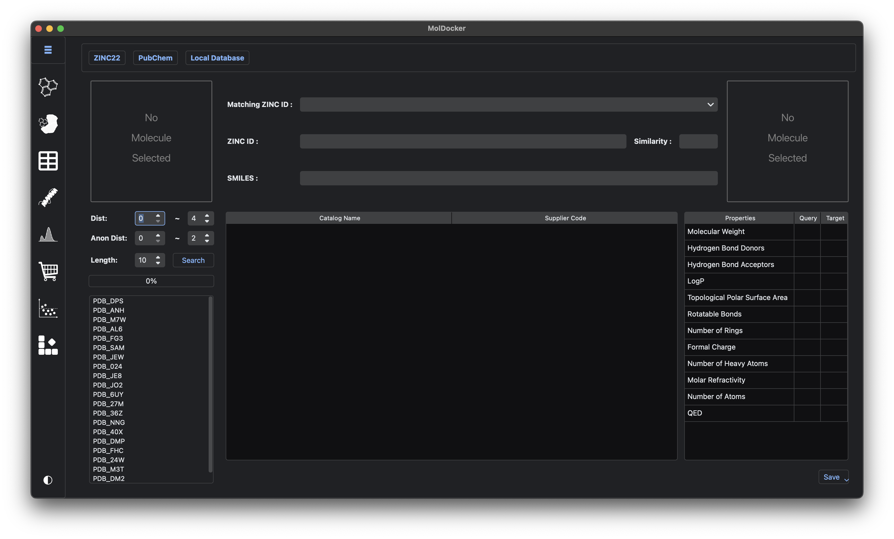
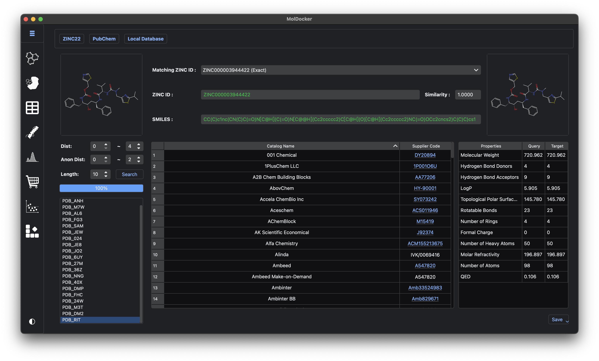

Result Analysis¶
The Table, Structure, Figure, and Shopper modules are the main tools for result analysis.
Table¶
To load data into the Table module, select the docked output directory containing the docked files and press View to read and load the results. By default, the Table module analyzes molecular properties for each docked molecule and loads only the first-ranked result output by each docking program. To adjust these options, uncheck the relevant checkboxes.

By default, Table filters the results to display only the top 1% of docked results. To modify the filters or add/remove columns, click Filter to open the table filter dialog.

The filter layout is similar to that of the Converter module but uses a simpler logic: all filters are either AND or OR operations. Most columns are filtered by value, except for the Name column, which accepts case-sensitive Python regex.
Users can save the filtered or full table in CSV, TSV, or XLSX formats or export filtered ligands to individual SDF files by clicking Save and selecting the desired option. To save docked results in a refinement-ready format, choose the Refine Format option, then select either Directory for local refinement or ZIP for cloud-based refinement.
Structure¶
The Structure module is linked to the Table module and displays protein-ligand complexes filtered by Table. If the filtered table contains fewer than 500 rows, the Structure module updates automatically. Otherwise, users need to click Update to refresh the Structure module manually.

In the top-left corner, a tree view displays the docked molecules. Checking a molecule's checkbox displays its structure in the viewer on the right. The interactions between the ligand and protein are profiled and shown in the structure and in the bottom-left toolbox. Interaction types are color-coded: green indicates the interaction exists, while red indicates it does not.
To save a structure image, select File → Export Image in the viewer. An image named "Screenshot" will be saved in the "Download" directory. To save the PDB structures of the protein, ligand, complex, and interaction profiles (CSV format), click Save Selected and choose a target directory to save the files.
Figure¶
The Figure module provides an overview of numerical data related to docking, such as scores and molecular properties. Figure has its own filter, independent of the Table module. By default, it filters data to display docking scores within the range of median ± 3×IQR.

The Figure module offers three visualization modes:
- Correlation: Displays a heatmap of pairwise Pearson correlation coefficients between datasets. This mode is shown when both X and Y axes are empty.
- Distribution: Displays the distribution (histogram, KDE, and rug) of a single dataset. This mode is shown when either the X or Y axis is selected.
- Marginal: Displays a marginal plot for two datasets. This mode is shown when both X and Y axes are selected. An additional Color option allows visualization of a third dataset.
To save figures, click the Camera symbol in the top-right corner of the figure toolbox. The figure will be saved to the "Download" directory on your local PC.
Shopper¶
The Shopper module is semi-independent and does not require docked results. However, it updates automatically with filtered docked molecules once they are loaded in Table.

Database Options¶
Users can choose from three database options: ZINC22, PubChem, or Local Database (MDDB format). Each has its pros and cons:
-
ZINC22:
- Pros:
- Large molecule database with many vendors.
- Does not use local computational resources.
- Cons:
- Includes non-vendor information (e.g., ChEMBL).
- Some vendor data may be outdated.
- Molecule queries are online, which may pose security risks for sensitive molecules.
- Pros:
-
PubChem:
- Pros:
- Focused on vendor information.
- Common vendor data is up-to-date.
- Does not use local computational resources.
- Cons:
- Smaller database with fewer vendors compared to ZINC22.
- Molecule queries are online, with potential security risks for sensitive molecules.
- Pros:
-
Local Database (MDDB format):
- Pros:
- Searches are performed locally, ensuring higher security.
- Supports custom, user-tailored databases.
- Cons:
- Relies on local computational resources for similarity searches.
- Pros:
Each database has its own dedicated "page," and changes made to one page do not affect others.
Query Molecules¶
In each database page, the top-left section displays the 2D structure of the selected query molecule. Right-clicking this image brings up a menu to save it as a PNG or search it in common vendor/databases. Currently, it includes the following databases/vendors:
- Ambinter
- molport
- eMolecules
- ChemExper
- Sigma Aldrich
- ChemSpider
- Chemspace
- ZINC22 & ZINC20
This one-to-one search queries a single molecule against a specific vendor/database. It provides up-to-date vendor information by directly querying vendor websites. MolDocker automates this process, automatically filling in the search box with molecule information (SMILES or InChI).
Search Parameters and Input¶
Below the query molecule image are the search parameters and a Search button. For Local Database, this section also allows users to import local databases by dragging & dropping them into the table.
The bottom-left section contains the query molecule input list, which is automatically updated with Table-filtered molecules if docked molecules are loaded. Users can also import non-docked molecules by dragging & dropping their files into this list. Supported formats include all non-tabular formats readable by the Converter module. Once the desired molecules are loaded, press the Search button to begin searching.

Search Results¶
The right side of each database page displays search results, including:
- A drop-down list of all matched molecules.
- The name, SMILES, and image of the selected target molecule.
- Similarities and differences in chemical properties between the query and selected target molecule.
- Vendor information and IDs for the selected target molecule.